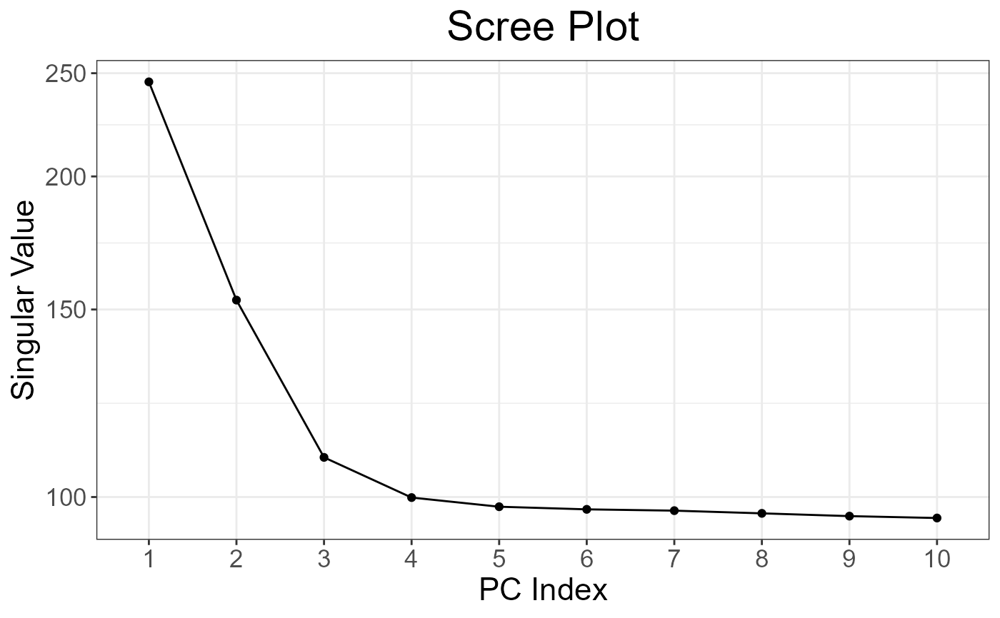
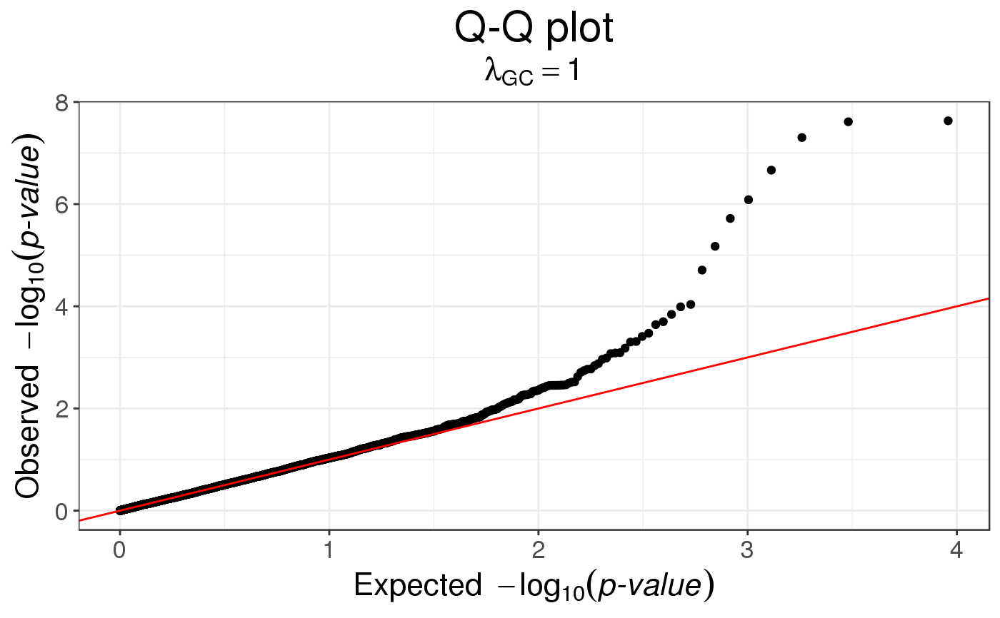

Method to detect genetic markers involved in biological adaptation. This provides a statistical tool for outlier detection based on Principal Component Analysis. This corresponds to the statistic based on mahalanobis distance, as implemented in package pcadapt.
snp_pcadapt(
G,
U.row,
ind.row = rows_along(G),
ind.col = cols_along(G),
ncores = 1
)
bed_pcadapt(
obj.bed,
U.row,
ind.row = rows_along(obj.bed),
ind.col = cols_along(obj.bed),
ncores = 1
)A FBM.code256
(typically <bigSNP>$genotypes).
You shouldn't have missing values. Also, remember to do quality control,
e.g. some algorithms in this package won't work if you use SNPs with 0 MAF.
Left singular vectors (not scores, \(U^T U = I\))
corresponding to ind.row.
An optional vector of the row indices (individuals) that
are used. If not specified, all rows are used.
Don't use negative indices.
An optional vector of the column indices (SNPs) that are used.
If not specified, all columns are used.
Don't use negative indices.
Number of cores used. Default doesn't use parallelism.
You may use nb_cores().
Object of type bed, which is the mapping of some bed file.
Use obj.bed <- bed(bedfile) to get this object.
An object of classes mhtest and data.frame returning one
score by SNP. See methods(class = "mhtest").
Luu, K., Bazin, E., & Blum, M. G. (2017). pcadapt: an R package to perform genome scans for selection based on principal component analysis. Molecular ecology resources, 17(1), 67-77.
snp_manhattan, snp_qq and snp_gc.
test <- snp_attachExtdata()
G <- test$genotypes
obj.svd <- big_SVD(G, fun.scaling = snp_scaleBinom(), k = 10)
plot(obj.svd) # there seems to be 3 "significant" components

pcadapt <- snp_pcadapt(G, obj.svd$u[, 1:3])
snp_qq(pcadapt)
